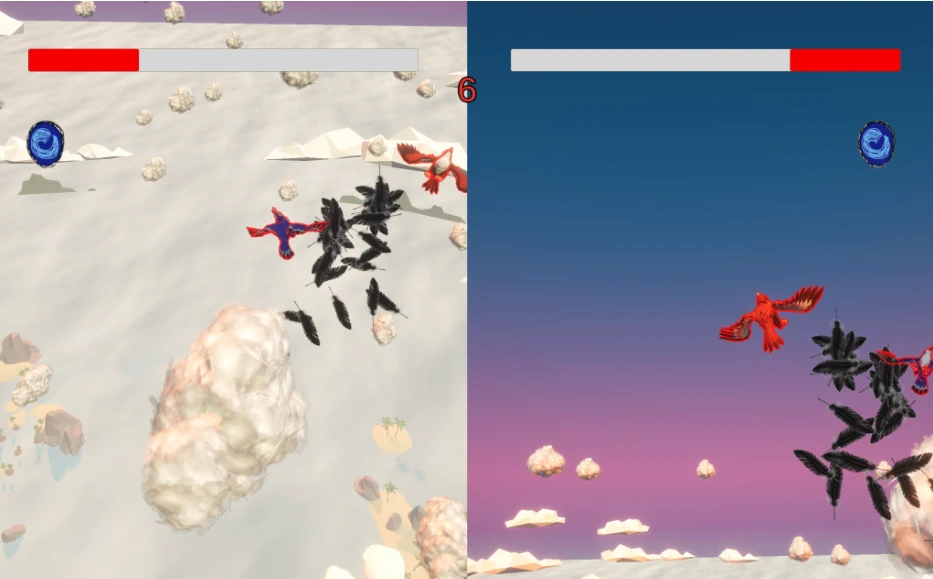
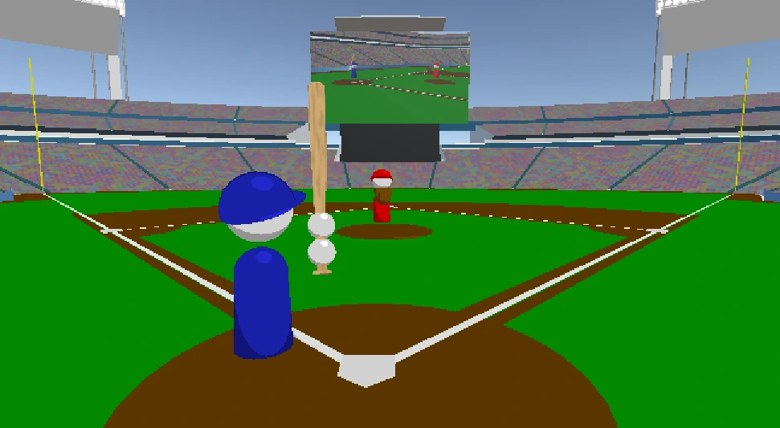

Pic Peck
A digital collectable card game based on identifying and taking pictures of birds in the wild.
A digital collectable card game based on identifying and taking pictures of birds in the wild.

A silky-smooth space shooter roguelike.

Create and test gas masks against ever-changing chemical warfare.

A narrative restaurant simulator about an Asian immigrant running a burger diner.

A short tech demo with 3D drawing mechanics (and a gun).

A game about a small creature lost in the woods which finds a giant mech that destroys anything in its path.

A 1v1 arena fighter where both players duel as birds.
A puzzle/organization game where you are a cog in a bureaucratic system designed to conform identities into simple profiles.

A study on how time passes through the lens of a cartoonesque retelling of a life.

A game about working an office job.

A narrative stealth game about Violet, an artist struggling to survive in a corporate space.

Hit, gain power, and hit harder. The only way to escape this life? Hit a home run… to SPACE!!!

The first ever trumpet-type game.

A game about exploring a dead mall, tapping into the fear of abandoned and liminal spaces.

A game where you are a worm with a gun that shoots guns to kill the worm god.

A board game where graffiti artists compete for territory and infamy through graffiti battles.

A four-player strategy board game where animal real estate factions use unique abilities and tetromino tiles to compete for land.